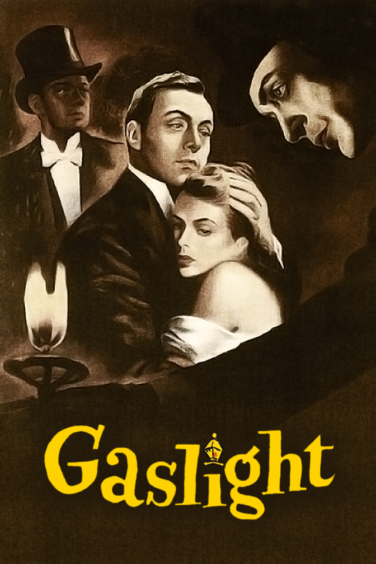

Gaslighting
Menurut psychology today, Gaslighting adalah bentuk manipulasi dan kontrol psikologis yang berbahaya. Korban gaslighting secara sengaja dan sistematis diberi informasi palsu yang membuat mereka mempertanyakan apa yang mereka tahu benar, seringkali tentang diri mereka sendiri. Mereka mungkin akhirnya meragukan ingatan mereka , persepsi mereka, dan bahkan kewarasan mereka. Seiring waktu, manipulasi pemantik gas dapat menjadi lebih kompleks dan kuat, sehingga semakin sulit bagi korban untuk melihat kebenaran.
Apa perbedaan antara gaslighting dan manipulasi?
Manipulasi adalah bagian penting dari gaslighting, tetapi manipulasi adalah taktik yang cukup umum, dan hampir semua orang mampu menggunakannya sementara gaslighting, dan gaslighter, lebih jarang. Anak-anak mencoba memanipulasi orang tua pada usia dini, dan pemasar bertujuan untuk memanipulasi konsumen, tetapi gaslighting melibatkan pola perilaku kasar dengan maksud tidak hanya untuk memengaruhi seseorang, tetapi juga untuk mengendalikan mereka
Taktik gaslighter pada korban
Hubungan dengan pemantik gas tampaknya dimulai dengan cukup baik. Mereka mungkin memuji korban pada kencan pertama dan langsung curhat pada mereka. Pengungkapan seperti itu, sebelum keintiman apa pun terjalin, membangun kepercayaan dengan cepat; itu bagian dari taktik yang dikenal sebagai pengeboman cinta . Semakin cepat seorang korban terpikat, semakin cepat fase manipulasi selanjutnya dapat dimulai.
Seorang gaslighter awalnya akan berbohong tentang hal-hal sederhana, tetapi volume informasi yang salah segera tumbuh , dan gaslighter dapat menuduh korban berbohong jika dia mempertanyakan narasinya. Mereka biasanya menggunakan penguatan positif sesekali untuk membingungkan korban, tetapi pada saat yang sama, mereka mungkin mencoba membuat orang lain melawan korban, bahkan teman dan keluarga mereka sendiri, dengan memberi tahu mereka bahwa korban berbohong atau mengalami delusi.
Seorang korban mengalami keraguan diri yang meningkat karena pemantik gas bersikeras bahwa apa yang dia ingat, pikirkan, dan rasakan salah. Individu manipulatif akan memperkenalkan kebohongan di arena yang lebih sensitif, bertujuan untuk mengganggu dan mendistorsi aspek dasar dari keberadaan korban , melemahkan mereka, membangun kebingungan, dan memaksa mereka untuk mengandalkan realitas versi pemantik gas.
Cara mengenali gaslighter
Gaslighting bisa lebih efektif dan sukses daripada yang dibayangkan banyak orang. Hampir semua orang bisa rentan terhadap taktik gaslighting, yang telah diterapkan sepanjang sejarah, dan terus digunakan hingga saat ini, oleh pelaku kekerasan dalam rumah tangga, diktator, narsisis, dan pemimpin sekte. Gaslighter yang paling efektif seringkali yang paling sulit dideteksi; mereka mungkin lebih dikenali dari tindakan dan kondisi mental korbannya.
Mereka yang menggunakan taktik ini sering kali memiliki gangguan kepribadian , gangguan kepribadian narsistik , dan psikopati . Manipulator memiliki kecenderungan untuk menampilkan satu wajah kepada mangsanya dan satu lagi ke seluruh dunia, membuat korban berasumsi bahwa jika mereka meminta bantuan atau berbicara, tidak ada yang akan percaya bahwa mereka telah dimanipulasi dan dilecehkan secara emosional. Gaslighter biasanya mengulangi taktik tersebut di beberapa hubungan.
Perbedaan Gaslighter dengan Manipolator dan Narsisme
Manipulasi adalah bagian penting dari gaslighting, tetapi manipulasi adalah taktik yang cukup umum, dan hampir semua orang mampu menggunakannya sementara gaslighting, dan gaslighter, lebih jarang. Anak-anak mencoba memanipulasi orang tua pada usia dini, dan pemasar bertujuan untuk memanipulasi konsumen, tetapi gaslighting melibatkan pola perilaku kasar dengan maksud tidak hanya untuk memengaruhi seseorang, tetapi juga untuk mengendalikan mereka.
Gaslighting dapat menjadi bagian dari kepribadian narsistik, tetapi itu bukanlah sifat inti dari gangguan kepribadian narsistik . Seorang narsisis mungkin mempromosikan dirinya sendiri dan merasa lebih unggul dari orang lain; seorang gaslighter bertujuan untuk membuat orang lain mempertanyakan harga dirinya sendiri.
Contoh Kasus Gaslighting
Berikut contoh kasus gaslighting
Drama tahun 1938, Gas Light

Istilah gaslighting berasal dari drama tahun 1938, Gas Light, dan adaptasi filmnya. Penerangan gas dapat terjadi dalam hubungan pribadi atau profesional, dan korban ditargetkan pada inti keberadaan mereka: rasa identitas dan harga diri mereka . Orang manipulatif yang terlibat dalam gaslighting melakukannya untuk mendapatkan kekuasaan atas korbannya, baik karena mereka hanya mendapatkan kenikmatan yang menyesatkan dari tindakan tersebut atau karena mereka ingin mengendalikan korbannya secara emosional, fisik, atau finansial.
Referensi
- https://www.psychologytoday.com/us/basics/gaslighting